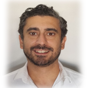

Hello!
My name is Frederico Bajouco.
I study at 42 Porto school and my user ID is fde-carv.
I am a developer passionate about technology and innovation.
I am always learning and challenging myself with new projects.
If you want to learn more about me or collaborate on a project, feel free to reach out!
🔗 To learn more about my school, visit 42 Porto.
🔗 To learn more about me, visit my profile at 42.
🔗 Check out my GitHub profile.